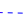
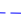
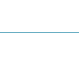

Upload a CSV file to get started. Your file should have one, and exactly one, header row.
Now specify which columns to use in for the x-axis and y-axis of your graph.
Upload some CSV data to create your graph.
Find a data point
Mouseover data items to see details, or select an entry from the dropdown below.
 99% confidence interval
 95% confidence interval
 Mean
Indicator
Population
Beware! This tool is in alpha and has not been verified by a professional statistician - we recommend you use the charts it generates for demo purposes only. If a chart fails to render as you expect, please check you have selected the right columns, then contact me with a copy of your data - anna [at] darkgreener.com.
Upload some CSV data to create your graph.
If you'd like to embed this graph in your own blog or website, then you can copy and paste the following code.